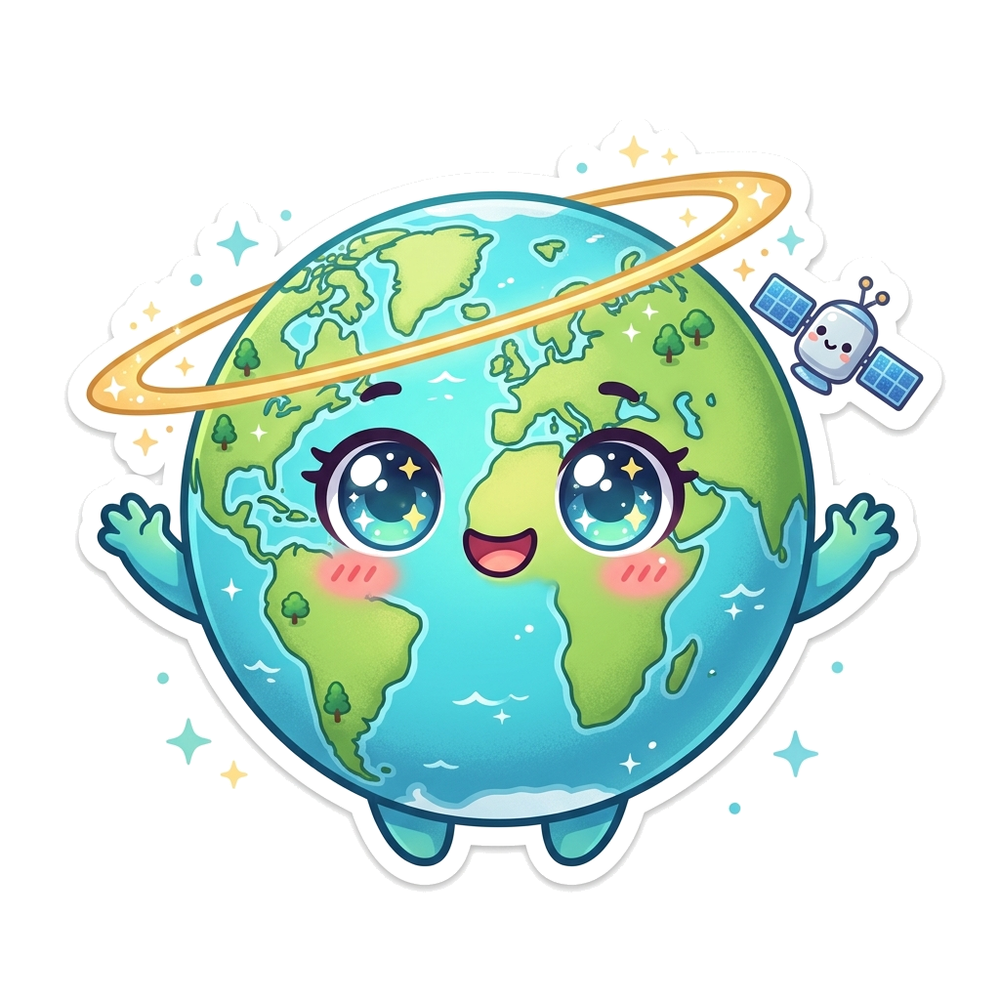

为了让桌宠与您的桌面环境、壁纸质感及日常工作流达成完美平衡，我们梳理并实现了 5 套不同维度的设计方案。您可以在下方直接试玩、比较，并在中枢菜单中一键切换！
还原最初版设计的克制美学。深空午夜蓝核底盘、翡翠绿矢量陆块几何、微光天体轨道环与在线脉冲点。零视觉光污染，与严肃代码及办公桌面浑然一体。
灵感来自深空科研终端。通透微光全息经纬线构形，倾斜 23.5° 地球自转轴网格，犹如科幻空间站桌面上的微型行星全息投影。
经典复古点阵宇航员。带着太空面罩在你的桌面上漂浮漫步，偶尔摆动，带来恰到好处的复古游戏情怀与陪伴温度。

水灵灵的大眼睛、温柔微笑与粉嫩腮红，头顶漂浮微型轨道。给严肃的屏幕增添一丝生机与灵动的治愈感。
仅 36px 直径的微型悬浮印记。常态下视线占用率小于 0.05%，完全不抢壁纸任何风头；点击时轻灵展开全功能中枢面板。
| 方案名称 | 设计语言 | 桌面存在感 | 与壁纸融合度 | 操作方式 |
|---|---|---|---|---|
| 1. 初版 · 极简赛博天体 | Tabliss 极简冷调 + 矢量天体 | 低侵入 · 自然融合 | ★★★★★ (100% 契合卫星地貌) | 单击展开中枢 / 任意拖拽 |
| 2. 全息 · 经纬网格球 | 科幻科研终端 + 旋转经纬线 | 低侵入 · 通透悬浮 | ★★★★★ (极客科技感) | 单击展开中枢 / 任意拖拽 |
| 3. 像素 · 复古宇航员 | 8-Bit 像素怀旧 | 中等 · 趣味点缀 | ★★★★☆ (轻量趣味) | 单击展开中枢 / 任意拖拽 |
| 4. 萌系 · Q 版小地球 | 二次元萌宠贴纸 | 显眼 · 活泼灵动 | ★★★☆☆ (个性化萌系) | 单击展开中枢 / 任意拖拽 |
| 5. 微型 · 极简胶囊 | 36px 微型悬浮徽标 | 极低 · 几乎无感 | ★★★★★ (极致纯净) | 单击展开中枢 / 任意拖拽 |